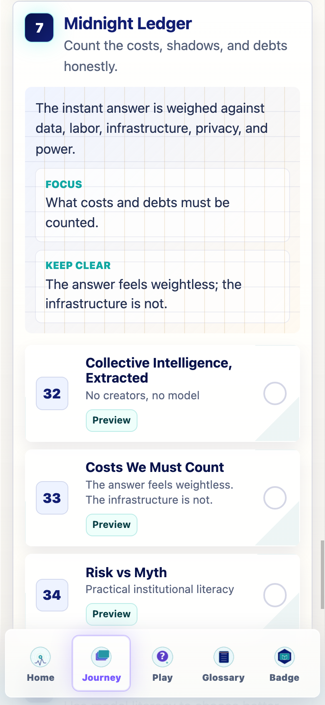
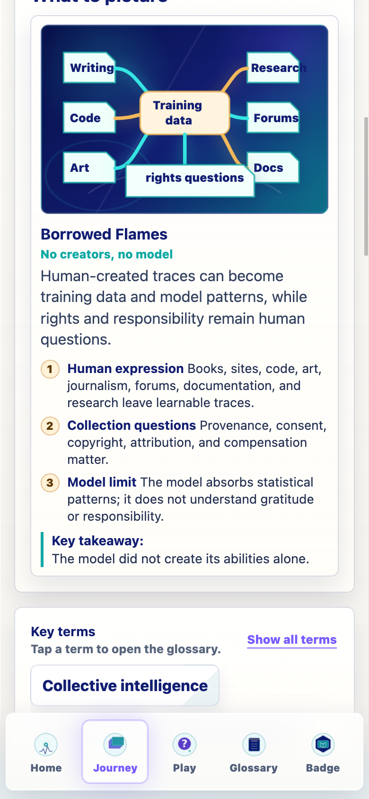
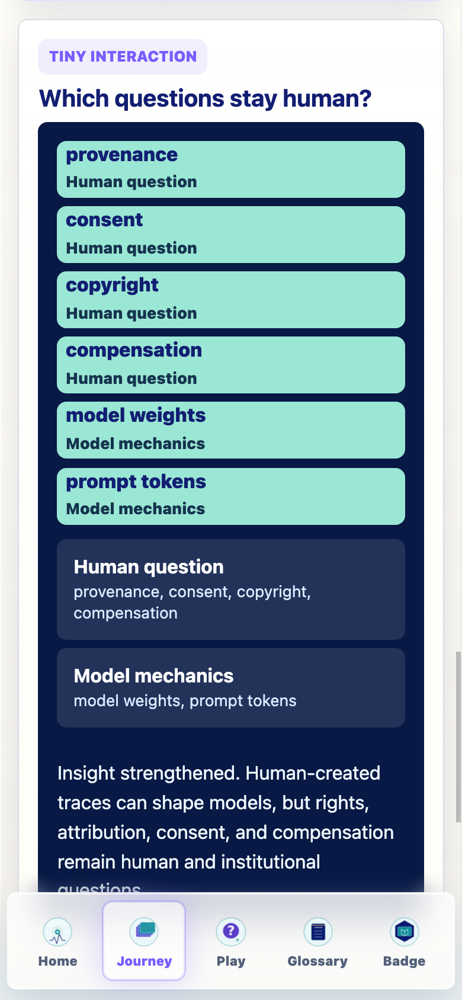
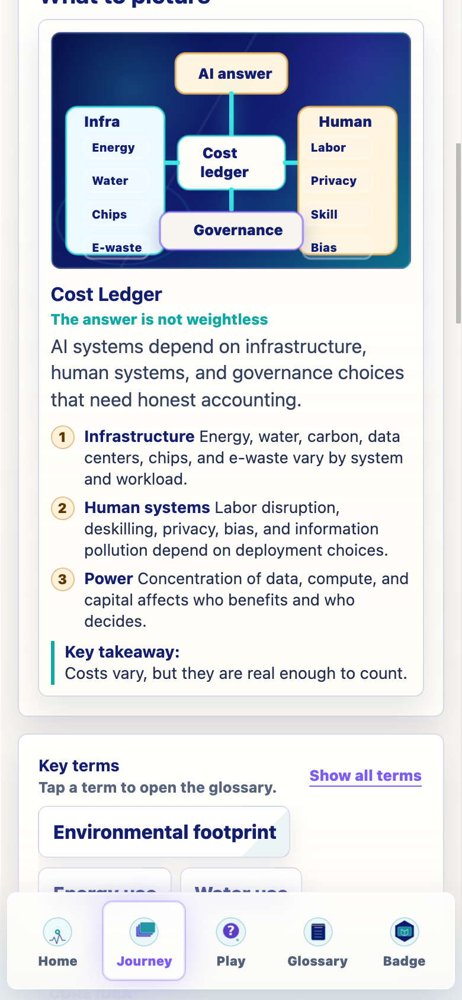
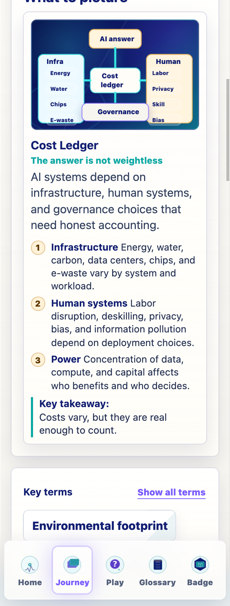
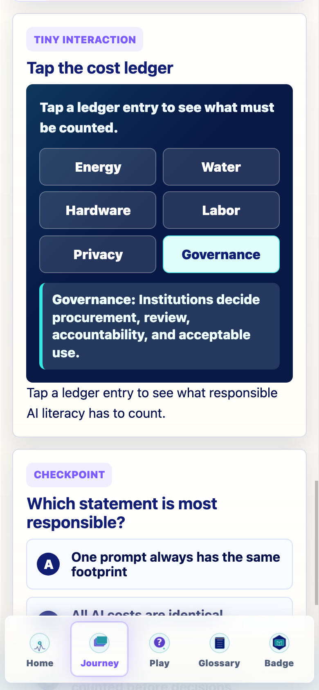
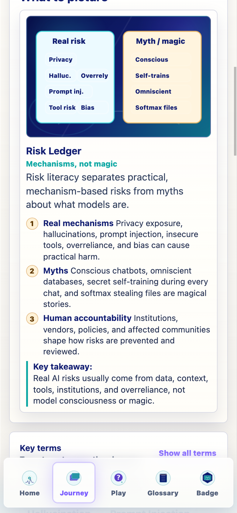
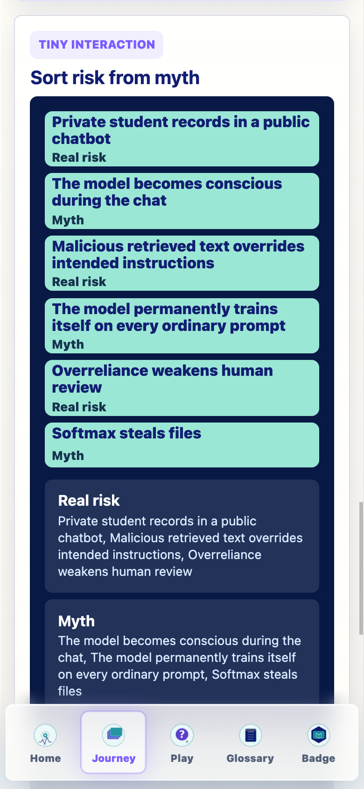
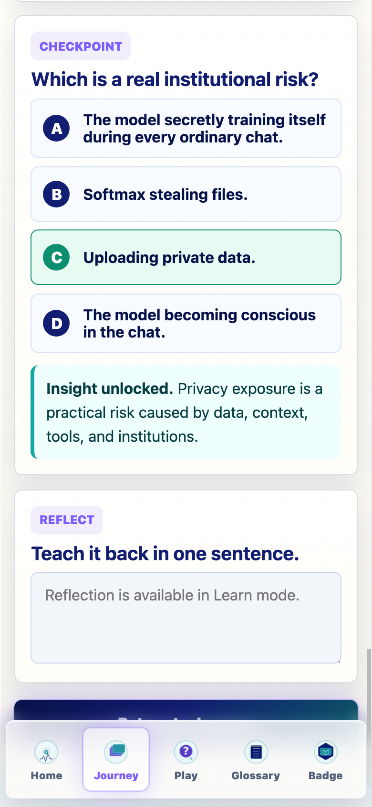

Prompt Life v0.24.1
Midnight Ledger Implementation Report
This PDF wraps the implementation summary and the requested mobile screenshots for the three Midnight Ledger cards.
What Changed
- Repaired Collective Intelligence into a source-trace and rights-question visual plus a human-question sort.
- Repaired Costs We Must Count into a cost ledger visual plus a tap-to-reveal ledger interaction.
- Expanded Risk vs Myth into full lesson architecture, a mechanism-vs-myth visual, a six-item sort, and a four-choice randomized checkpoint.
- Added glossary support for risk literacy, tool use, overreliance, vendor lock-in, concentration of power, bias, and information pollution.
- Bumped the visible app version to
v0.24.1.
Preserved
- No Journey cards, Journey order, games, generated PNG assets, dependencies, progress rules, checkpoint randomization, badge logic, or Glossary Dojo logic changed.
- Prompt Injection / Tool Risk remains inside Risk vs Myth and the glossary; no standalone card was added.
Verification
- npm run typecheck: passed
- npm run build: passed with existing Vite large-chunk warning
- npm run build:pages: passed with existing Vite large-chunk warning
- npm run audit:answers: passed; Risk vs Myth is now a four-choice randomized checkpoint
320px/390px overflow: No horizontal overflow detected in captured states.
Preview mode: Previewing this card. Progress will not change.; Previewing this card. Progress will not change.; Previewing this card. Progress will not change.
Home assets: Generated Home mark and hero loaded.
Glossary Dojo: Play screen still exposes Glossary Dojo.
Screenshots









Known Issues
- The existing Vite large-chunk warning remains.
- Future Image 2 generation is ready for the Costs card if a later pass wants a textless supporting asset; this pass intentionally added no generated PNGs.